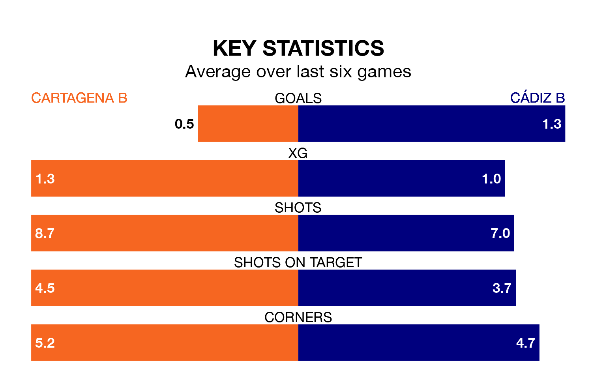

Cartagena B face Cádiz B at the Estadio Municipal Cartagonova on Sunday looking to secure a first win in 11 Segunda División RFEF Group 4 games.
Cartagena B have lost four and drawn six matches since they last earned three points – against Vélez on January 28.
They face a Cádiz B side who have won two and drawn four over that time.
Cartagena B are bottom of the table after 30 games, of which they have won three and drawn 11, earning 20 points.
Cádiz B are four places ahead of the hosts in 14th, with eight wins and 11 draws putting them on 35 points.
With 23 goals in 30 games so far this season, Cartagena B are the league's third-lowest scorers with 0.8 goals per game. And they are conceding more than average, letting in 46 goals at a rate of 1.5 per game.
The away team, meanwhile, are above average scorers, with 1.1 goals per game, compared to a league average of 1.0. They have conceded 1.3 goals per game.
In the last three years, Cartagena B and Cádiz B have played each other on three occasions. they drew all of them.
Their last meeting was on December 10, when they played out a 2-2 draw.
Cartagena B's last match was on April 7, a 4-0 loss against Manchego.
Cádiz B lost 3-1 against CD El Palo last time out, also on April 7, with Kensly Vázquez Cervera on the scoresheet.
Updated: 14:47 (UTC), 09/04/24